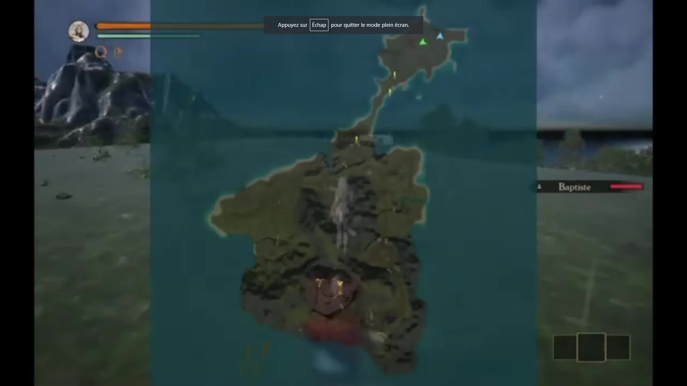
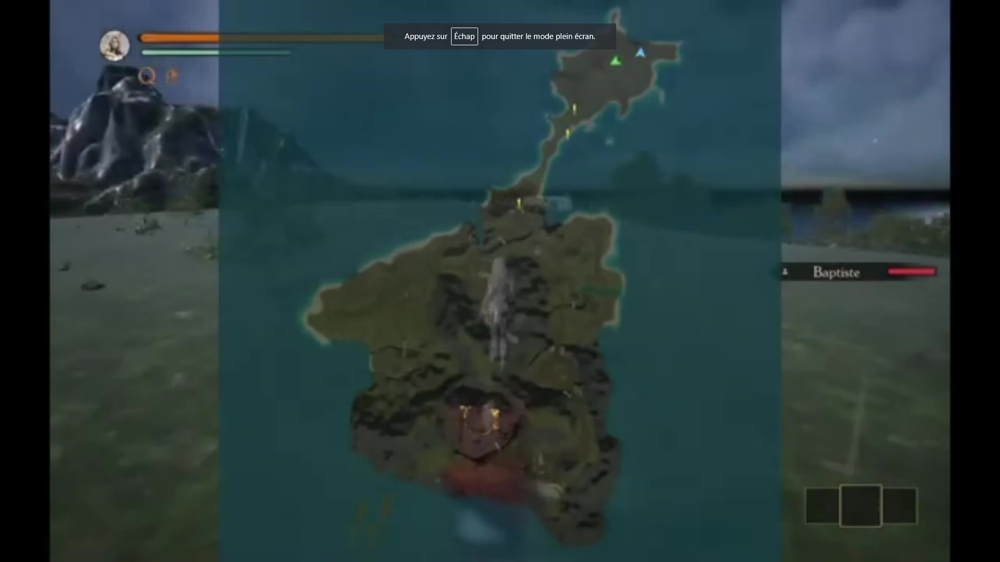

Regardez nos différentes vidéos sur notre chaine YouTube
Regardez nos différentes vidéos sur notre chaine YouTube
 C++
C++ Unreal
Unreal Wwise
Wwise Windows
Windows 2022
2022Jeu réalisé durant la session d'hiver lors de mes études à l'université de Sherbrooke pour le diplôme du DDJV.
Ikolia est un jeu multijoueur pouvant aller jusqu'à 5 joueurs. Vous incarnez des aventuriers en expédition. Cependant, durant une traversée en mer, une énorme tempête se déclenche et vous débarquer sur une île au premier abord déserte.
Vous allez devoir l'explorer et découvrir les différents secrets que cette terre cache. Vous allez surtout très vite vous rendre compte que cette n'est pas aussi déserte qu'il n'y paraît, mais qu'elle semble être habitée par un maléfice mystérieux.
Création d'un système d'inventaire que peut utiliser le joueur pour stocker sous forme de stack des items trouvables sur l'île. Gestion de l'aspect visuel et fonctionnel.

Création d'un système de craft permettant aux joueurs de fusionner des items de bases afin d'obtenir des objets plus forts. Gestion également de l'aspect visuel et fonctionnel.
 

Création et modélisation de la structure de base de l'île. Ajout également des textures, d'un foliage environnemental, mise en place de l'océan et conception des différentes structures humaines. Gestion également des zones de combat et des récompences (placement des ennemies, placement des récompenses...).
Injection de la musique et des différents sons d'ambiance réalisés par un musicien dans le jeu. Gestion des différentes pistes via Wwise. Attachement de bruits d'ambiance avec des animations.